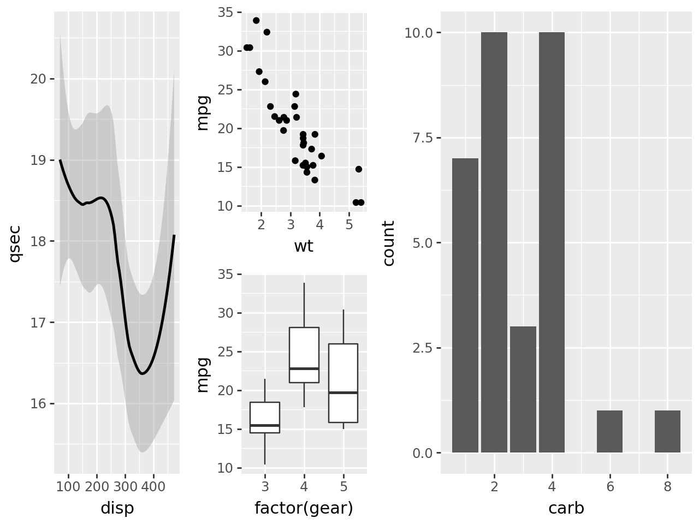

from plotnine import (
ggplot,
aes,
geom_point,
geom_boxplot,
geom_bar,
geom_smooth,
facet_wrap,
labs,
theme,
theme_538,
element_rect,
element_text,
)
from plotnine import *
from plotnine.composition import plot_spacer
from plotnine.data import mtcarsPlots
p1 = ggplot(mtcars, aes("disp", "qsec")) + geom_smooth()
p2 = ggplot(mtcars, aes("wt", "mpg")) + geom_point()
p3 = ggplot(mtcars, aes("factor(gear)", "mpg")) + geom_boxplot()
p4 = ggplot(mtcars, aes("carb")) + geom_bar()The Arithmetic
(p1 | p2 | p3) / p4(p1 / p2 / p3) | p4The grouping of the plots is determined by the precedence of the operators which means these two:
p1 / p2 / p3 | p4
(p1 / p2 / p3) | p4are equivalent.
The space allocated within the overall composition is determined by the groups. e.g. Below, the panel in p1 has the same height as the panels of p2 and p3 combined.
(p1 / (p2 / p3)) | p4p1 | (p2 / p3) | p4For a 2x wider panel on the left, we group the items on the right.
p1 | ((p2 / p3) | p4)For a 2x wider panel on the right, we put together the left and right at the same nesting level.
(p1 | (p2 / p3)) - p4
Modifying the composition
Add to the last plot in the composition
When an object that is not a plot or composition is added (+) to the composition, it is added (+) to the last plot in the composition.
composition = (p1 | (p2 / p3) | p4)
composition + theme_bw()The dpi and figure_size of the composition are taken from the last plot, so we can add to the composition to change them.
composition + theme(figure_size=(4, 3))composition + geom_line(aes(y=after_stat("count")), stat="count", color="cyan")Add to plots at the top level of the composition
composition * theme_bw()Add to all plots in the composition
composition & theme_bw()Adding space to the composition
You can create space within the composition by adding a plot_spacer or by adjusting plot_margin.
p1 | p2p1 | plot_spacer() | p2p1 | (p2 + theme(plot_margin_left=.25))p1 | (p2 + theme(plot_margin_right=.25))p1 | (p2 + theme(plot_margin_bottom=.25))While the margin is added to p2, the height of p1 is adjusted so that the panels align.
How space is allocated
For any composition group, the space is allocated such that the edges of the panels align along one dimension, and the sizes are equal along the other dimension. For example, when a plot has a legend, it is allocated more space so that its panel has the same size as the adjacent panel.
p1 | p2 + aes(color="factor(cyl)")Making the plot backgrounds visible reveals the size of each plot.
brown_bg = theme(plot_background=element_rect(fill="#FF000022"))
cyan_bg = theme(plot_background=element_rect(fill="#00FF0022"))
(p1 + brown_bg) | (p2 + aes(color="factor(cyl)") + cyan_bg)Facetted plots are treated as if all the panels were one.
p1 | (p2 + aes(color="factor(cyl)") + facet_wrap("cyl", ncol=1))And the space between the facet panels counts towards the panel area of the plot.
p1 | (p2 + aes(color="factor(cyl)") + facet_wrap("cyl", ncol=2))Tagging Plots
Tags are an essential part of plot compositions and the by default the are placed in the top-left margin of each plot.
p1_a = p1 + labs(tag="a)")
p2_b = p2 + labs(tag="b)")
p3_c = p3 + labs(tag="c)")
p4_d = p4 + labs(tag="d)")
(p1_a | p2_b | p3_c) / p4_dThe position of each tag can be changed.
top_right = theme(plot_tag_position="topright")
top = theme(plot_tag_position="top")
p1_a = p1 + labs(tag="a)") + top_right
p2_b = p2 + labs(tag="b)") + top_right
p3_c = p3 + labs(tag="c)") + top_right
p4_d = p4 + labs(tag="d)") + top
(p1_a | p2_b | p3_c) / p4_dYou can also set the location to one of margin (the default), panel, plot.
panel_top_right = theme(
plot_tag_position="topright",
plot_tag_location="panel",
plot_tag=element_text(color="brown", margin={"t": 2, "r": 2})
)
p1_a = p1 + labs(tag="a)") + panel_top_right
p2_b = p2 + labs(tag="b)") + panel_top_right
p3_c = p3 + labs(tag="c)") + panel_top_right
p4_d = p4 + labs(tag="d)") + panel_top_right
(p1_a | p2_b | p3_c) / p4_dThe valid positions for tags are topleft, top, topright, right, bottomright, bottom, bottomleft, left or a tuple[float, float].
Save
Use the save method to save the composition as an image e.g.
composition.save("plot.png")
composition.save("plot.png", dpi=200)
composition.save("plot.jpg")
composition.save("plot.svg")
composition.save("plot.pdf")